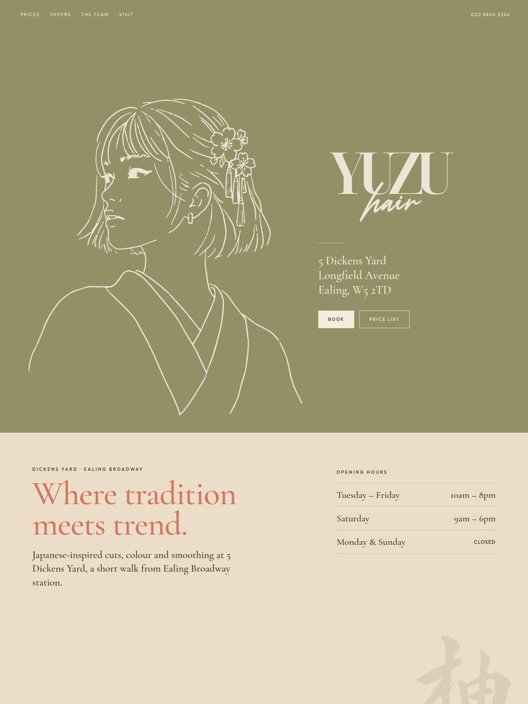
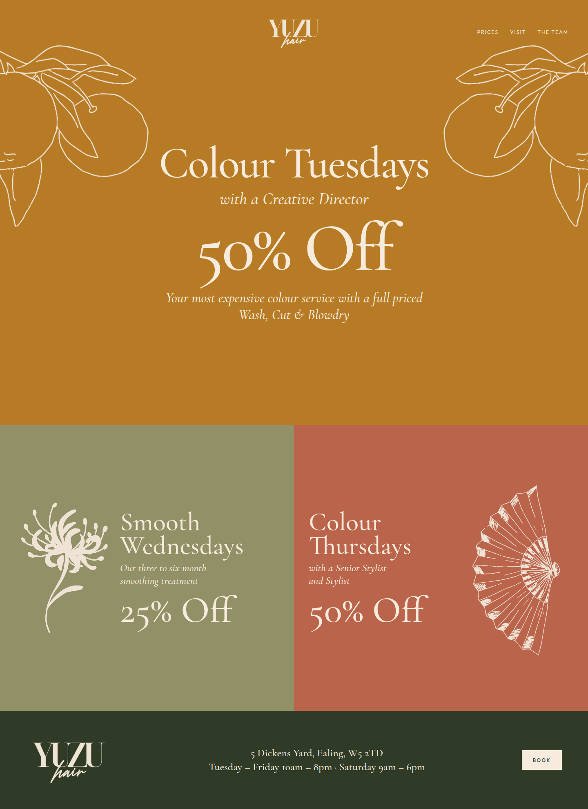
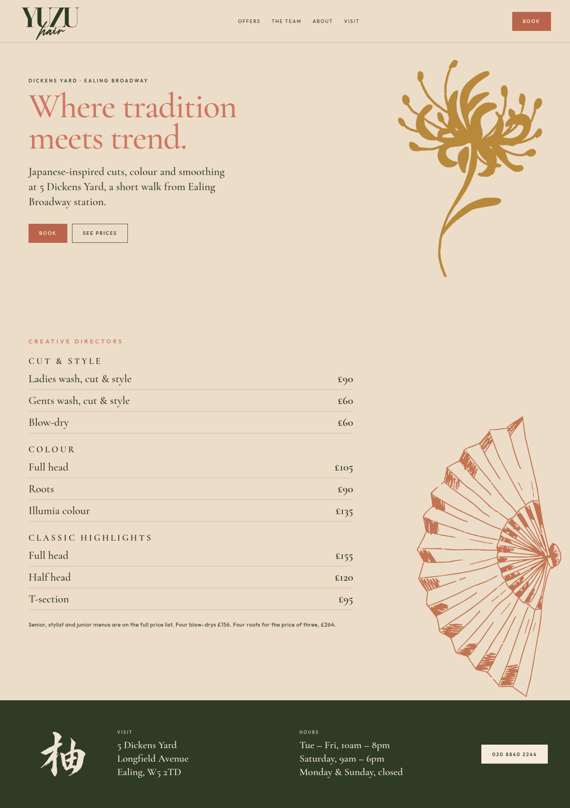

Proposal · the live site is unchanged
The asset folder holds the October print set: price lists, window posters, a drinks menu, business cards, logos and line drawings. These three pages use that palette and those drawings. Open a full artboard for the type at size.


